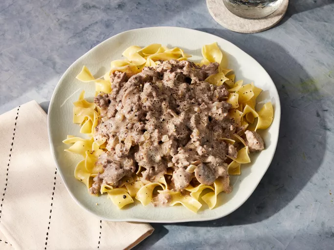

Beef Stroganoff

Description
The sauce in this stroganoff recipe is loaded with mushrooms, onions, and ground beef. It's easy to make and reheats well. This recipe is a favorite in our house!
Ingredients
- 4 tablespoons butter, divided
- 6 ounces fresh mushrooms, sliced
- 1 medium onion, chopped
- 1 (12 ounce) package egg noodles
- 1 ounce Parmesan cheese, freshly grated
- 2 pounds lean ground beef
- ¼ cup all-purpose flour
- 2 cups beef brothl
- 1 cup sour cream
- salt and black pepper to taste
Steps
- Gather all ingredients.
- Melt 2 tablespoons butter in a large skillet over medium heat. Add mushrooms and onion; cook and stir until soft, about 5 minutes. Transfer to a bowl; do not clean the skillet.
- Fill a large pot with lightly salted water and bring to a rapid boil. Cook egg noodles at a boil until tender yet firm to the bite, 7 to 9 minutes. Drain.
- While the noodles are cooking, melt remaining 2 tablespoons butter in the skillet over medium heat. Add ground beef and sauté until browned and crumbly, 7 to 9 minutes..
- Mix in flour and cook for 1 minute.
- Stir in broth and cook until slightly thickened, 2 to 4 minutes.
- Add mushroom mixture, then stir in sour cream, salt, and pepper. Cook, stirring occasionally until sauce is hot, 2 to 3 minutes; do not boil.